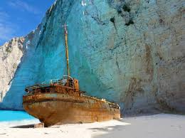
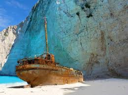
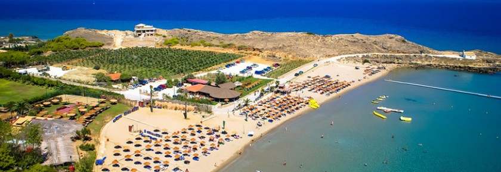
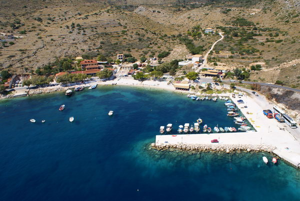
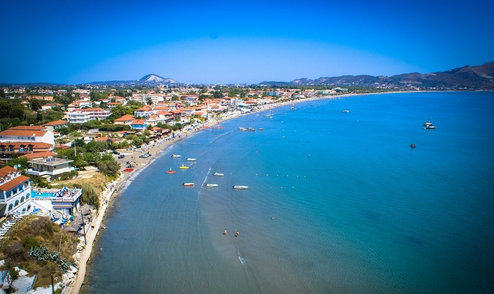
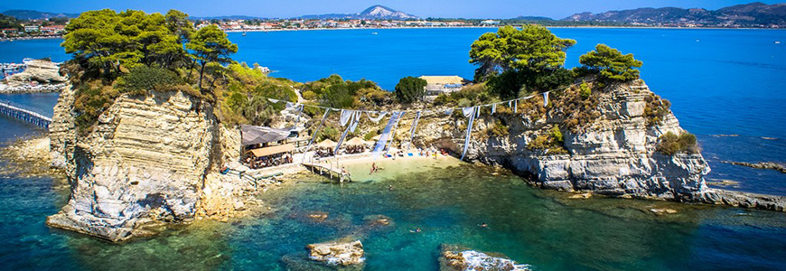

Zakintos ili Zante treće po veličini, od sedam većih jonskih ostrva, a ujedno i jedno od najlepših grčkih ostrva. Zakintos leži u južnom delu Jonskog mora, koje je deo Sredozemnog mora. Ostrvo sa nekoliko susednih malih ostrva čini prefekturu Zakintos, a glavno naselje na ostrvu, istoimeni grad Zakintos, je njeno upravno središte. Ostrvo Zakintos se nalazi na krajnjem zapadu države Grčke, a u jugoističnom delu Jonskog mora. Od kopna (zapadnog Peloponeza) ostrvo je udaljeno oko 25 km ka zapadu. Najbliže drugo Jonsko ostrvo je Kefalonija na 20 km ka severu. Ka zapadu i jugu je otvoreno more.
Prirodni uslovi: Na Zakintosu se razlikuju pojedini delovi po reljefu. Južni deo je niži i ravniji, time i plodniji, dok je sever planinski, suv i ogoljen. Tu se i nalzi najviši vrh ostrva, Vrahionas (758 m n.v.). Površina ostrva je 409 km, pri čemu je najveća dužina oko 40 km, a šierina oko 20 km. Ukupna dužina obale 123 km. Obala nije jako razuđena i najveći oblici na njoj su omanji zalivi i plaže. Većina plaža je u visu žala, do 100 m dužine, okružena okomitim liticama. Klima na ostrvu je sredozemna sa dugim i tolim letima i blagim i kišovitim zimama. Biljni i životiski svet je osoben za Sredozemlje. Gajene kulture se gaje u nekoliko malih dolina - maslina, vinova loza, agrumi, povrće i voće.
Istorija: Zahvaljujući arheološkim nalazima danas se zna da je Zakintos bio naseljen još u vreme praistorije. Prvi put Zakintos je spominjan u Homerovom delu Ilijadi. Istorijski gledano, prvi pomen ostrva vezan je za njegovo osvajanje od strane kralja Arkeizija, vladara susedne Kefalonije. Posle njega, ostrvo je osvojio legendarni Odisej. Posle toga ostrvo se osamostalilo i postalo polis, čije uređenje nije bilo uzdrmano duže od 650 godina. U 2. veku pre n.e. Zakintos osvajaju Rimljani, a u srednjem veku nasleđuju ih Vizantinci. Međutim, kako su Zakintos i ostala Jonska ostrva bila na samom obodu carstva i otvorena ka Italiji, Mlečani ih prvi put osvajaju još u 13. veku. Ovo je sačuvalo Zakintos od duge i teške otomanske vladavine, koja ej vekovima vladala većim delom današnje Grčke. Tokom ovog razdoblja došlo je do snažnog uticaja Zapada na život ostrva (arhitektura, nošnja, govor). I pored toga mesno stanovništvo je sačuvalo grčki jezik i pravoslavnu veru. Početkom 19. veka upravu na ostrvom preuzima Velika Britanija i Britanci ga nazivaju "Zante". Pod Velikom Britanijom će ostrvo biti sve do 1864. g., kada se vraća matici, tj. novosonovanoj državi Grčkoj. Tokom Prvog i Drugog svetskog rata ostrvo nije bilo uništavano, ali je zato bilo teško pogođeno zemljotresom iz 1953. g. Veoma malo zgrada je preživelo zemljotres, ali su nove građene po strogim propisima, tako da noviji zemljotresi nisu napravili mnogo štete.
Hoteli:
- Amaryllis hotel
- Diana palace hotel
- St.John resort hotel villas suites & spa
- Palmyra hotel
- Kalamaki beach hotel
- Sofia's hotel
- Edelweiss hotel
- Tui sensimar caravel resort and spa
- Vasilikos beach hotel
- Andreolas luxury suites
- Zante pantheon hotel
- Al Mare beach hotel
Plaže:
Navagio/Brodolom - Plaža Navagio ili brodolom je najpoznatija plaža Zakintosa, koja leži na zapadnoj strani jonskog ostrva, u blizini sela Anafotiria. Brodolom je jedan od najslikanijih pejzaža u Grčkoj. Smatra se da je jedna od najboljih plaža u Grčkoj. Na početku se zvala Agios Georgios, ali svoje novo ime duguje brodolomu čamca koji je prevezao ilegalne cigarete 1983. Brod se nasukao na kopno. Prolazećim godinama, pesak je u potpunosti okružio brod koji sada izgleda kao da se iz njega pojavljuje. Tragovi broda mogu se videti na središtu velike bele peščane plaže koja ima neverovatne tirkizne i kristalne vode. Velike vertikalne stene belih kamenja okružuju pesak stvarajući jedinstvenu i očaravajuću sliku. Da bi došli do ovog raja, potrebno je iznajmiti mali brod iz luke Porto Vromi. Ovi taksi čamci je napuštaju svaki čac i putovanje je oko 30 minuta.
 

Sveti Nikola - Plaža na najužem severu ostrva. Jedna od najpopularnijih tokom jeka sezone.
 Plaža laganas - Ogromna plaža Laganas je najpopularnije i kosmopolitsko naselje Zakintosa, koje se nalazi 9 km severno od glavnog grada. Naselje leži oko prirodnog zaliva koji je puno ležaljkama i kišobranima i kantinama. Puno objekata za vodene sportove nudi se posetiocima poput plaža, barova za grickalice i obale uz more sa pogledom na plažu. To je najtipičnije mesto Zakintosa tokom dana, a naročito noću za brojne pabove i kafiće gde uglavnom mladi teže istraživati. Glavni put Laganasa je ukrcan mnogim restoranima, barovima i turističkim prodavnicama, a iza puta možete pronaći razne luksuzne hotele sa bazenom i mnogim drugim sadržajima. Plaža Laganas zaštićena je grčkim i međunarodnim zakonodavstvom kao rodno mjesto ugroženih vrsta morske kornjače Kareta-kareta i deo je grčkog Nacionalnog morskog parka. Do malog ostrva otoka Agios Sostis, koje se nalazi nasupram plaže Laganas, može se doći drvenim mostom
 